COZY PROMPT MAKER
코지음악프롬프트생성기
사용설명서
원하는 곡의 느낌을 고르고 단추 하나만 누르면, 수노(Suno)에 그대로 붙여 넣을 가사·곡 설명·곡 제목을 AI가 대신 써 드리는 프로그램입니다.
처음이시면 1번부터 차례대로 따라 하세요. 한 번만 해 두면 되는 일(설치, 정품 인증, AI 키 넣기)이 앞쪽에 있습니다.
1
준비물
- 윈도우 컴퓨터 (윈도우 10 또는 11)
- 인터넷 — AI가 글을 써 줄 때 인터넷이 필요합니다.
- 라이선스 키 — 메일로 받으신
KIT-로 시작하는 글자입니다. - 구글 계정 (지메일 주소) — AI 키를 무료로 받을 때 씁니다. 4번에서 자세히 알려 드립니다.
알아 두세요
키는 두 가지가 있습니다. 헷갈리기 쉬우니 먼저 구별해 두세요.
- 라이선스 키 — 저희가 보내 드린 것. 프로그램을 여는 열쇠입니다. (3번)
- AI 키 — 손님이 구글에서 직접 받는 것. AI가 글을 쓰게 하는 열쇠입니다. (4번)
2
설치하기
-
메일의 설치파일 링크를 눌러 파일을 받습니다.
받는 파일 이름은
CozyPromptMaker-Setup-v1.1.0.exe입니다.
받기가 끝나면 보통 다운로드 폴더에 들어 있습니다.설치파일 받기 (CozyPromptMaker-Setup-v1.1.0.exe)
인터넷 창이 경고를 할 때
인터넷 창(엣지, 크롬)이 "흔히 받는 파일이 아닙니다" 같은 말을 하며 받기를 멈출 수 있습니다. 그 줄 옆의 점 세 개(…)나 화살표를 눌러 유지 또는 계속 을 고르시면 받아집니다.
-
받은 파일을 마우스 왼쪽 단추로 빠르게 두 번 누릅니다.
-
파란 창 "Windows의 PC 보호"가 뜨면, 글자 추가 정보 를 누릅니다.
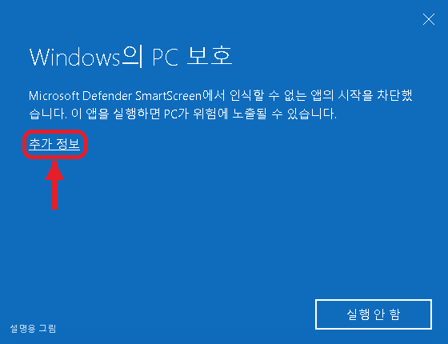
설명을 위해 다시 그린 그림입니다. 실제 창은 조금 다를 수 있어요. -
아래에 생긴 실행 단추를 누릅니다.
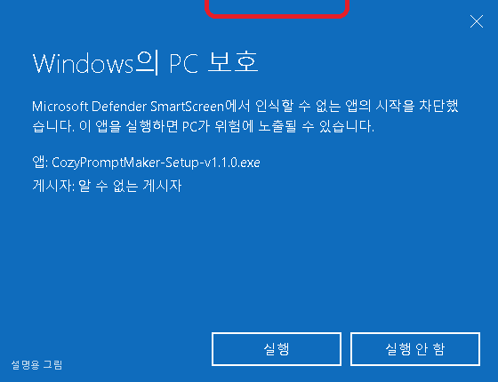
설명을 위해 다시 그린 그림입니다. 안심하세요
바이러스가 있다는 뜻이 아닙니다. 아직 널리 알려지지 않은 새 프로그램이라서 윈도우가 한 번 물어보는 것입니다. 이 창이 안 뜨면 이 단계는 건너뛰세요.
-
"바탕화면에 바로가기 만들기"에 체크가 된 것을 보고 다음 을 누릅니다.
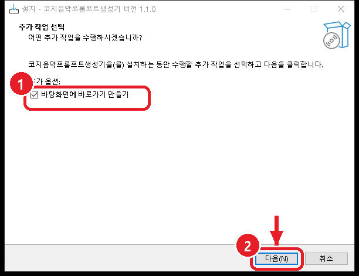
이 앞에 "설치할 위치"를 묻는 화면이 나오면 아무것도 바꾸지 말고 다음 을 누르세요.
-
설치 를 누릅니다.
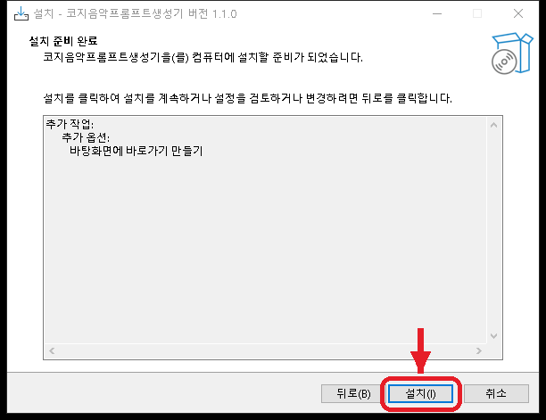
-
설치가 끝나면 마침 을 누릅니다.
프로그램이 저절로 켜집니다. 다음부터는 바탕화면의 코지음악프롬프트생성기 그림을 두 번 눌러 켜시면 됩니다.
화면을 그리는 데 필요한 윈도우 부품이 없는 컴퓨터는 설치 중에 그 부품을 함께 받습니다. 그래서 설치할 때는 인터넷이 켜져 있어야 합니다.
3
정품 인증 (처음 한 번만)
프로그램을 처음 켜면 작은 "정품 인증" 창이 먼저 뜹니다.
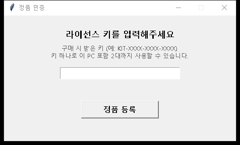
-
메일로 받으신 라이선스 키를 칸에 넣습니다.
메일에서
KIT-로 시작하는 글자를 마우스로 끌어 칠한 뒤 Ctrl 을 누른 채 C 를 눌러 복사하고, 칸을 한 번 누른 다음 Ctrl 을 누른 채 V 를 누르면 붙여 넣어집니다. 직접 쳐서 넣으셔도 됩니다.
사진의 키는 예시입니다. 받으신 키를 넣으세요. -
정품 등록 을 누릅니다.
초록 글씨로 "정품 등록 완료!" 가 나오고, 잠시 뒤 창이 닫히면서 프로그램이 열립니다.
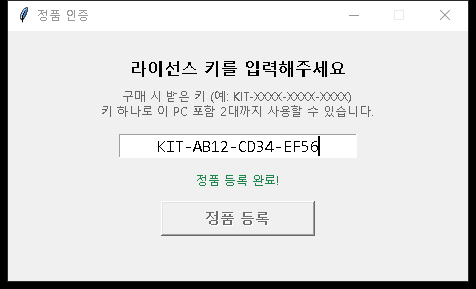
알아 두세요
- 키 하나로 컴퓨터 2대까지 쓸 수 있습니다.
- 한 번 등록하면 다음부터는 이 창이 안 뜹니다.
- 등록할 때는 인터넷이 꼭 필요합니다. 빨간 글씨로 "서버에 연결할 수 없습니다"가 나오면 인터넷 연결을 확인하고 다시 눌러 주세요.
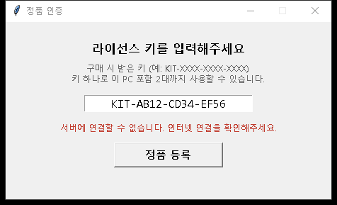
4
AI 키 넣기 (처음 한 번만)
이 프로그램은 AI에게 글을 쓰게 합니다. 그 AI는 손님 각자의 것을 쓰셔야 해서, AI 회사에서 "AI 키"를 받아 프로그램에 한 번 넣어 주셔야 합니다.
이것을 권합니다
제미나이 (구글)
구글 계정만 있으면 받을 수 있고, 지금은 무료로 쓸 수 있는 범위가 있습니다. 무료 범위는 구글 사정에 따라 바뀔 수 있습니다.
돈이 듭니다
GPT (오픈AI)
카드를 등록하고 돈을 미리 충전해야 쓸 수 있습니다. 이미 쓰고 계신 분만 고르세요.
가. 프로그램에서 키 넣는 창 열기
-
프로그램 맨 위 왼쪽의 API 키 등록 단추를 누릅니다.
열쇠 그림이 붙어 있는 단추입니다.
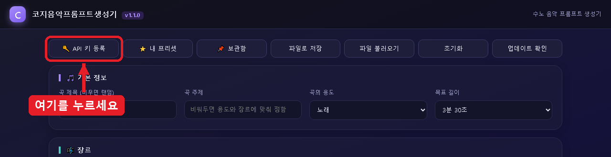
-
창이 열리면 제미나이 (Gemini) 칸이 선택되어 있는지 봅니다.
보라색 테두리가 있으면 선택된 것입니다. 처음에는 저절로 선택되어 있습니다.
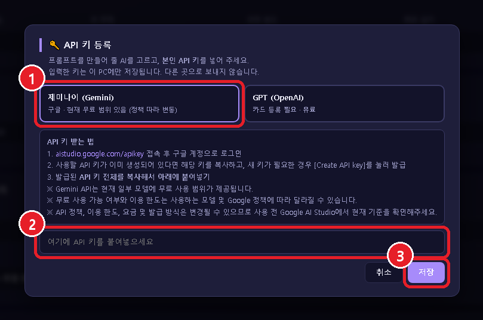
1 제미나이 고르기 · 2 키를 붙여 넣을 칸 · 3 저장 이 창은 열어 둔 채로 다음 단계로 가세요.
나. 구글에서 AI 키 받기
-
창 안의 보라색 글씨
aistudio.google.com/apikey를 누릅니다.인터넷 창(엣지나 크롬)이 따로 열립니다. 안 열리면 인터넷 창을 직접 켜고, 맨 위 주소 칸에
aistudio.google.com/apikey를 쳐 넣고 Enter 를 누르세요.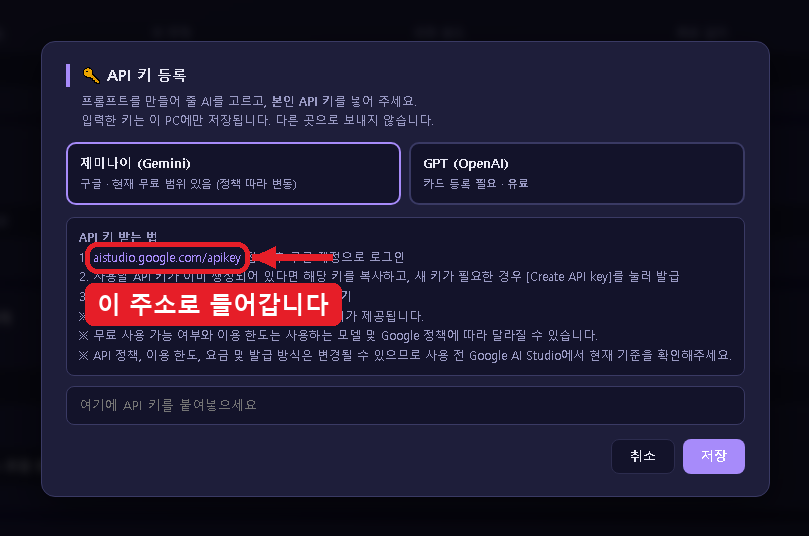
-
구글 계정(지메일 주소와 비밀번호)으로 로그인합니다.
이미 로그인되어 있으면 이 단계는 지나갑니다.
-
처음 들어가면 이용 약관에 동의하라는 창이 뜰 수 있습니다. 동의 칸에 체크하고 계속 진행합니다.
-
파란 단추 Create API key 를 누릅니다.
"API 키 만들기"라는 뜻입니다. 화면이 영어로 나와도 걱정 마세요. 이 단추만 찾으면 됩니다.
이미 만들어 둔 키가 목록에 있으면 새로 만들지 않고 그 키를 쓰셔도 됩니다. 중간에 무엇을 고르라는 창이 나오면 처음 나와 있는 그대로 두고 만들기 단추를 누르세요.
-
만들어진 키를 복사합니다.
영어와 숫자가 섞인 긴 글자가 나옵니다. 그 옆의 복사 단추(네모 두 개가 겹친 그림)를 누르거나 Copy 를 누르면 복사됩니다.
조심하세요
AI 키는 통장 비밀번호처럼 남에게 알려 주지 마세요. 메신저나 게시판에 올리면 다른 사람이 손님 이름으로 AI를 쓸 수 있습니다.
구글 화면 모양은 구글 사정에 따라 자주 바뀌어서 사진을 넣지 않았습니다. 위 이름의 단추를 찾으시면 됩니다.
다. 프로그램에 붙여 넣고 저장
-
프로그램으로 돌아와 "여기에 API 키를 붙여넣으세요" 칸을 한 번 누릅니다.
화면 아래 줄의 프로그램 그림을 누르면 프로그램으로 돌아올 수 있습니다.
-
키보드에서 Ctrl 을 누른 채 V 를 누릅니다.
키가 붙여 넣어집니다. 비밀번호처럼 점(●)으로 가려져 보이는 것이 정상입니다.
마우스 오른쪽 단추는 안 돼요
이 프로그램 안에서는 마우스 오른쪽 단추를 눌러도 "붙여넣기" 메뉴가 나오지 않습니다. 꼭 Ctrl + V 로 붙여 넣어 주세요.
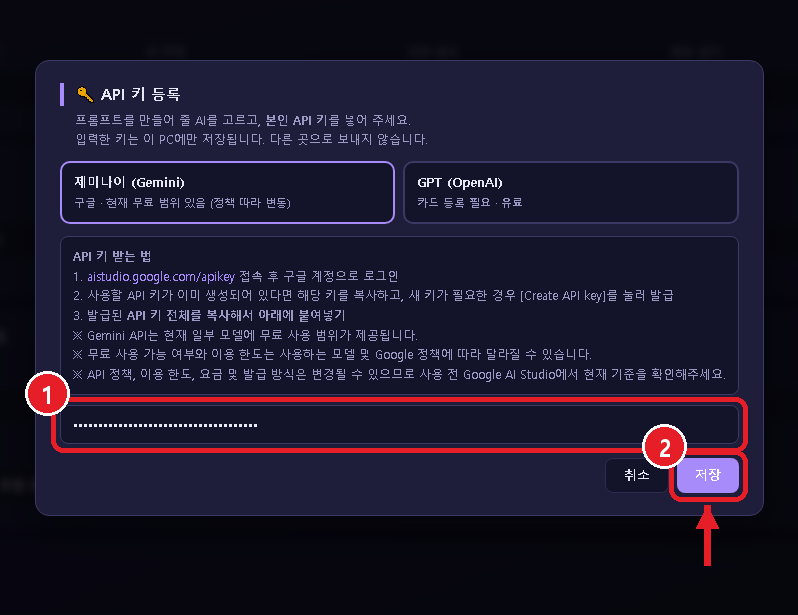
-
저장 을 누릅니다.
화면 아래에 초록 글씨로 "제미나이 키를 저장했습니다"가 잠깐 나오고, 맨 위 단추가 "API 키 등록 (제미나이)" 로 바뀝니다. 이러면 끝입니다.
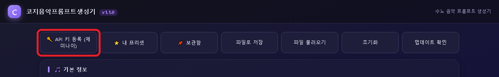
GPT(오픈AI)를 쓰고 싶을 때
키 넣는 창에서 GPT (OpenAI) 칸을 누르면 안내가 GPT용으로 바뀝니다.
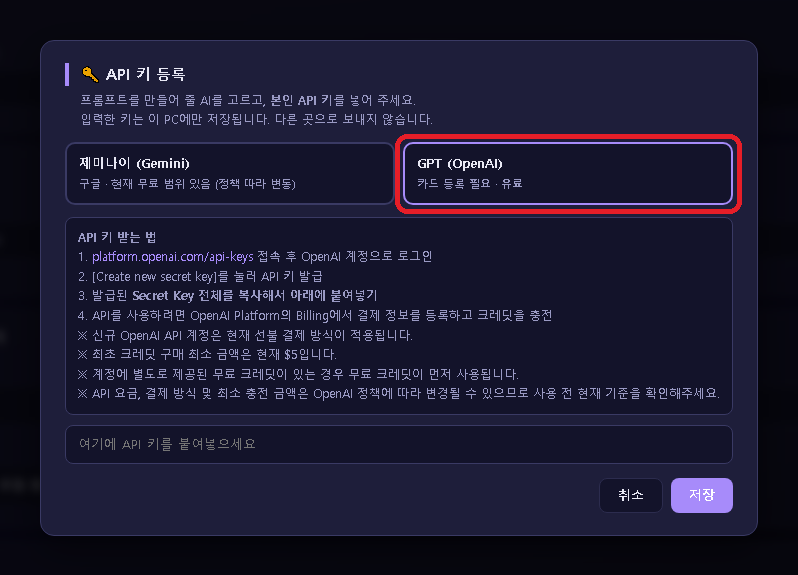
- 인터넷 창에서
platform.openai.com/api-keys에 들어가 오픈AI 계정으로 로그인합니다. - Create new secret key 를 눌러 키를 만들고 복사합니다.
- 오픈AI 결제 화면(Billing)에서 카드를 등록하고 돈을 충전합니다.
프로그램 안내 기준으로 처음 충전 최소 금액은 5달러입니다. 금액과 방식은 오픈AI 사정에 따라 바뀔 수 있습니다. 충전하지 않으면 키가 있어도 작동하지 않습니다.
- 프로그램 칸에 Ctrl + V 로 붙여 넣고 저장 을 누릅니다.
제미나이 키와 GPT 키를 둘 다 넣어 둘 수 있습니다. 창에서 마지막에 고르고 저장한 쪽을 씁니다.
5
곡 만들기
화면에 칸이 많지만 다 채울 필요는 없습니다. 모르는 칸은 그대로 두세요. 비워 둔 곳은 AI가 알아서 정합니다.
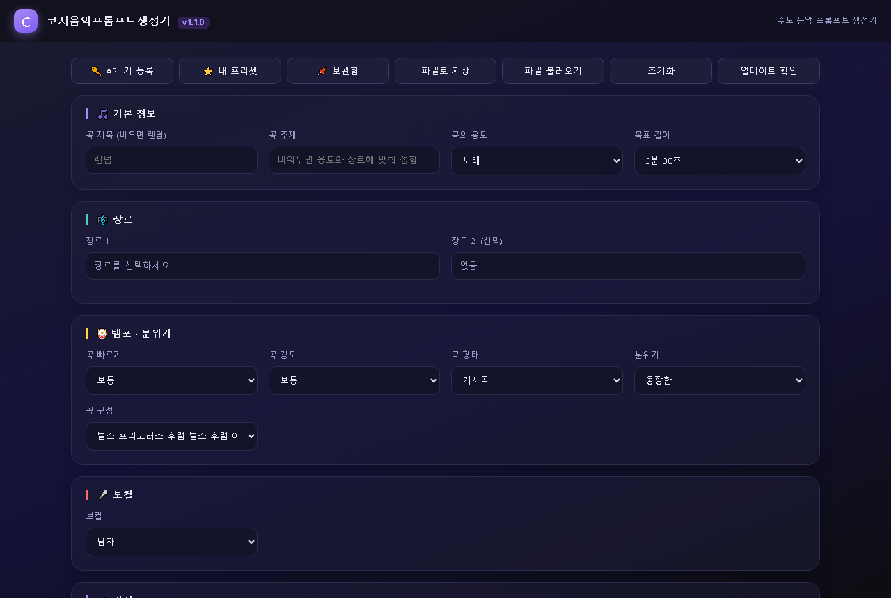
-
"곡 주제" 칸에 어떤 노래인지 한 줄로 적습니다.
예: 봄날에 떠난 사람을 기다리는 마음 · 손주에게 들려주는 자장가
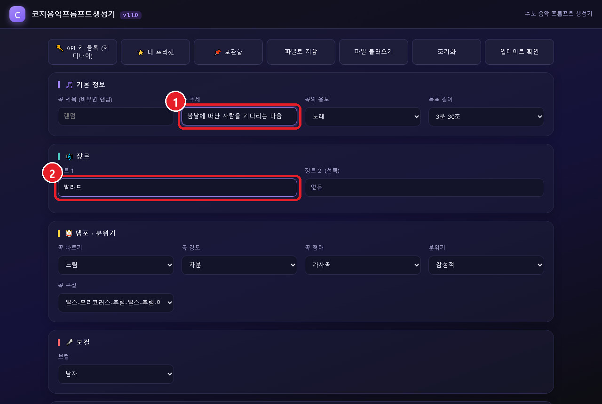
-
"장르 1"의 장르를 선택하세요 를 누르고, 목록에서 원하는 장르를 하나 누릅니다.
발라드, 트로트, 찬송가, 동요 등이 있습니다. 위쪽 "장르 검색" 칸에 글자를 넣어 찾을 수도 있습니다. 누르면 창이 저절로 닫힙니다.
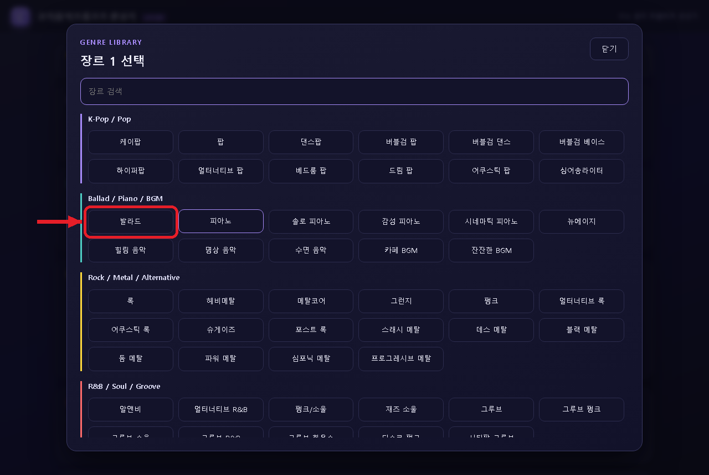
"장르 2"는 두 장르를 섞고 싶을 때만 고르세요. 안 골라도 됩니다.
-
곡 빠르기, 분위기, 곡 형태를 고릅니다. (안 바꿔도 됩니다)
칸을 누르면 목록이 펼쳐집니다. 원하는 것을 누르세요.
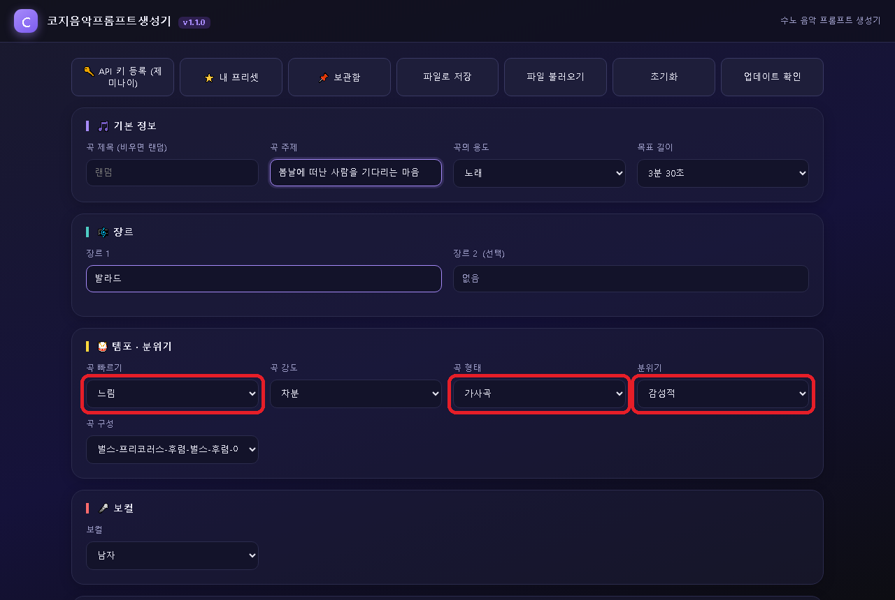
가사곡노래 가사까지 AI가 씁니다. (보통 이것)무가사노래 없이 연주만 있는 곡. 가사·보컬 칸은 흐려지고 쓰이지 않습니다.가사 직접 입력내가 쓴 가사를 그대로 쓰고 싶을 때. 아래에 가사 넣는 큰 칸이 생깁니다. -
보컬(남자 / 여자 / 남녀 듀엣)과 언어를 확인합니다.
처음에는 남자, 한국어 90% + 영어 10% 로 되어 있습니다. 한국어만 원하시면 "언어 2"를 없음 으로 바꾸세요.
-
화면 맨 아래 초록 단추 프롬프트 생성 → 을 누릅니다.
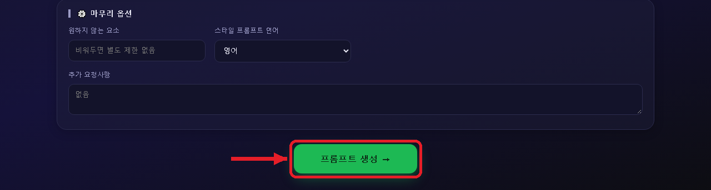
단추가 잘 안 눌리면 단추의 왼쪽이나 오른쪽 끝을 눌러 보세요.
-
"제미나이가 Suno 프롬프트를 만드는 중..." 이 나오면 기다립니다.
보통 몇 초에서 수십 초 걸립니다. 그동안 단추를 여러 번 누르지 마세요.
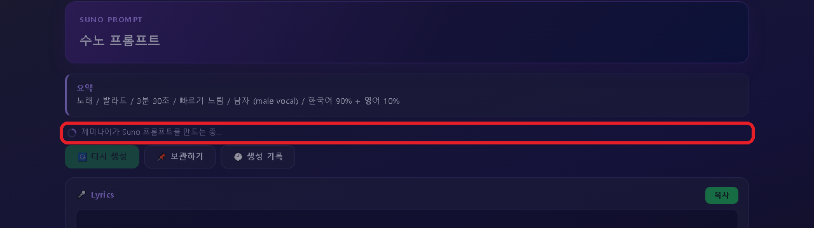
-
결과가 나옵니다.
칸이 네 개 나옵니다. 위에서부터 가사(Lyrics), 곡 설명(Style of Music), 곡 제목(Song Title), 수노 설정 추천값 입니다. 다음 6번에서 수노에 옮기는 법을 알려 드립니다.
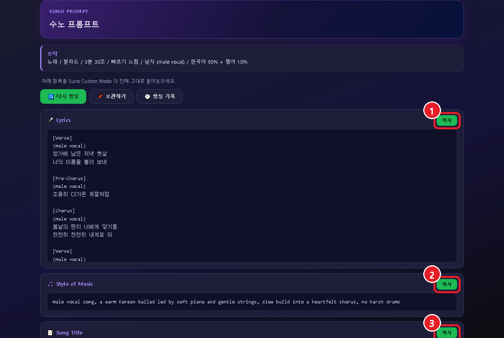
6
수노에 붙여 넣기
수노(suno.com) 곡 만들기 화면에서 직접 입력 방식(Custom)을 켜면 가사 칸, 스타일 칸, 제목 칸이 나옵니다. 칸 이름이 프로그램 결과 칸 이름과 같습니다.
-
프로그램의 Lyrics 칸 오른쪽 복사 를 누릅니다.
화면 아래에 초록 글씨로 "복사했습니다"가 잠깐 나옵니다.
-
수노의 가사(Lyrics) 칸을 누르고 Ctrl + V 로 붙여 넣습니다.
-
같은 방법으로 Style of Music 은 수노의 스타일 칸에, Song Title 은 수노의 제목 칸에 붙여 넣습니다.
한 번에 하나씩 복사하고 붙여 넣으세요. 복사는 마지막에 누른 것 하나만 기억됩니다.
-
맨 아래 "Suno 설정 추천값"은 숫자를 보고 수노에서 맞춥니다.
Weirdness(얼마나 색다르게), Style Influence(장르를 얼마나 강하게) 두 가지 숫자와 그 이유가 적혀 있습니다. 수노 화면에 같은 이름의 조절 막대가 있으면 그 숫자 근처로 맞추세요. 안 맞춰도 곡은 만들어집니다.
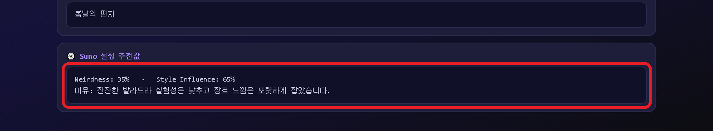
수노 화면은 수노 회사 사정으로 자주 바뀌어 이 설명서에는 사진을 넣지 않았습니다.
7
편리한 기능
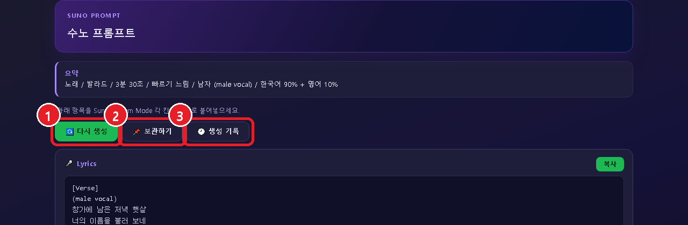
다시 생성
결과가 마음에 안 들면 다시 생성 을 누르세요. 같은 설정으로 새로 써 줍니다. 누를 때마다 AI를 한 번 더 쓰는 것이라, 무료 범위를 넘으면 잠시 막히거나(제미나이) 요금이 나갈 수 있습니다(GPT).
보관하기와 보관함
마음에 드는 결과는 보관하기 를 눌러 두세요. 맨 위 보관함 에 개수 제한 없이 남고, 나중에 다시 열어 볼 때는 AI를 쓰지 않아 비용이 들지 않습니다.
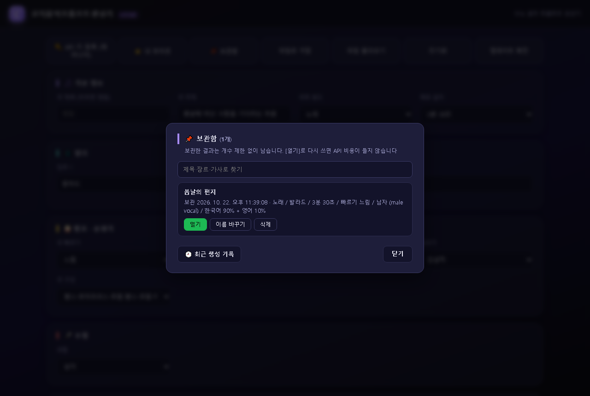
생성 기록
생성 기록 에는 최근에 만든 10개가 저절로 남습니다. 11번째부터는 오래된 것이 지워지니, 오래 두고 싶은 것은 보관함에 넣으세요.
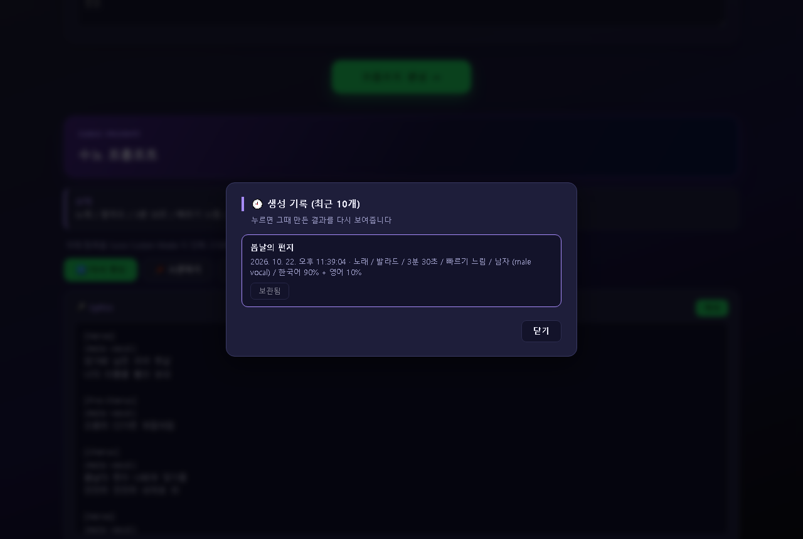
내 프리셋 (자주 쓰는 설정 저장)
장르·분위기 같은 설정을 매번 고르기 번거로우면 저장해 두세요.
- 원하는 대로 칸들을 채운 뒤, 맨 위 내 프리셋 을 누릅니다.
- 이름(예: 잔잔한 발라드)을 적고 현재 설정 저장 을 누릅니다.
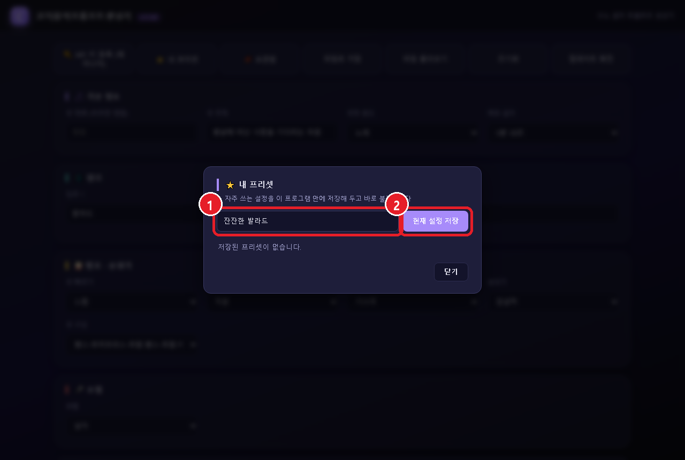
- 다음에 같은 창을 열어 저장한 이름 아래 불러오기 를 누르면 그 설정이 한 번에 채워집니다.
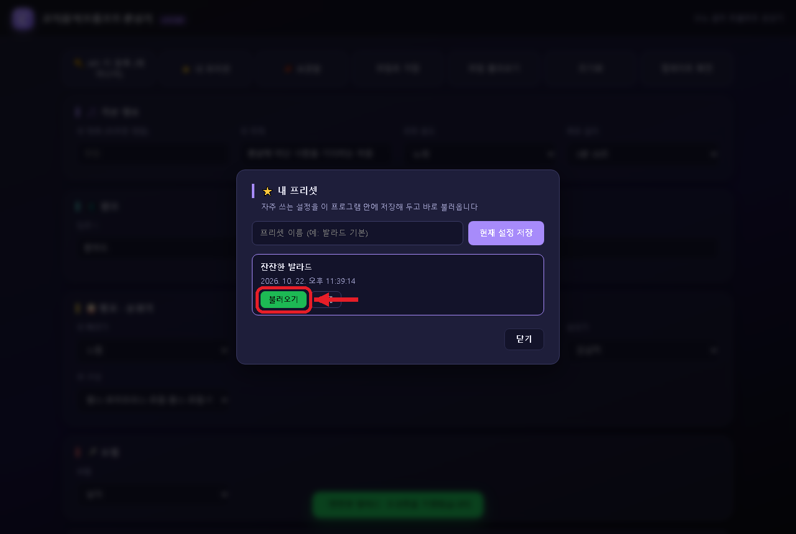
파일로 저장 · 파일 불러오기 는 설정을 파일로 꺼내 다른 컴퓨터로 옮길 때 씁니다. 초기화 는 모든 칸을 처음 상태로 되돌립니다.
8
자주 묻는 것
다른 컴퓨터에서도 쓰고 싶어요
키 하나로 컴퓨터 2대까지 쓸 수 있습니다. 다른 컴퓨터에 2번(설치)과 3번(정품 인증)을 똑같이 하고, 같은 라이선스 키를 넣으시면 됩니다.
AI 키는 컴퓨터마다 따로 넣어야 합니다. 4번을 그 컴퓨터에서 한 번 더 해 주세요. (구글에서 새로 만들 필요 없이 같은 AI 키를 써도 됩니다.)
컴퓨터를 바꾸셔서 3대째에 넣어야 한다면 아래 문의처로 연락 주세요. 정리해 드립니다.
업데이트(새 버전)는 어떻게 하나요?
프로그램을 켤 때 새 버전이 있는지 저절로 확인합니다. 새 버전이 있으면 "새 버전이 나왔어요" 창이 뜹니다. 지금 업데이트 를 누르면 받은 뒤 프로그램이 잠깐 꺼졌다가 새 버전으로 다시 켜집니다.
직접 확인하려면 맨 위 오른쪽 업데이트 확인 을 누르세요.
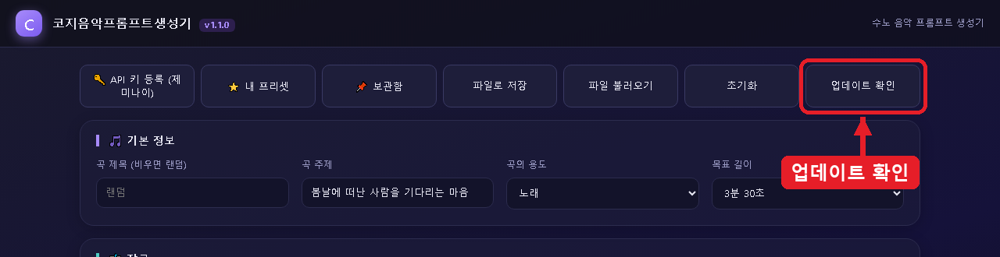
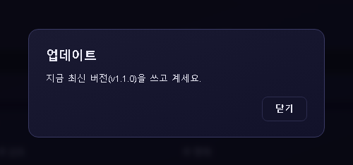
코지업로더를 설치할 때 함께 깔린 경우에는 코지업로더를 업데이트하면 이 프로그램도 함께 바뀝니다.
프로그램이 안 켜져요 / 정품 인증 창이 또 떠요
- 인터넷을 확인하세요. 정품 확인은 며칠에 한 번 인터넷으로 합니다. 인터넷이 없어도 마지막 확인 뒤 2주까지는 그냥 켜집니다.
- 정품 인증 창이 다시 뜨면 받으신 키를 한 번 더 넣고 정품 등록 을 누르세요.
- 창이 하얗게만 나오면 설치파일을 인터넷이 켜진 상태에서 다시 실행해 설치해 주세요. 화면을 그리는 윈도우 부품이 함께 깔립니다.
- 그래도 안 되면 컴퓨터를 한 번 껐다 켠 뒤 다시 해 보시고, 문의처로 알려 주세요.
키를 넣었더니 "전용"이라는 안내가 나와요
다른 프로그램(예: 코지곡제목변경기)용 키를 넣으신 것입니다. 메일에서 코지음악프롬프트생성기용 키가 맞는지 확인해 주세요. 두 프로그램을 묶음으로 사셨다면 같은 키가 둘 다에 들어갑니다.
"API 키가 없습니다" 줄이 보여요
아직 AI 키를 안 넣으셨다는 뜻입니다. 줄 오른쪽 키 입력 을 누르고 4번을 따라 하세요.
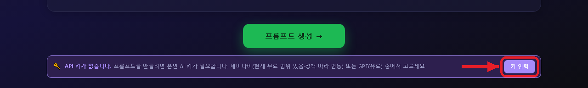
생성을 눌렀더니 빨간 오류 글씨가 나와요
- "(401)" 또는 "(403)" 이 들어간 글씨 — AI 키가 틀렸거나 지워진 것입니다. 키 넣는 창이 저절로 다시 열립니다. 4번처럼 키를 다시 복사해 넣으세요. 앞뒤에 빈칸이 같이 복사되지 않았는지도 봐 주세요.
- "(429)" 가 들어간 글씨 — 제미나이 무료 사용량을 잠시 다 쓴 것입니다. 잠시 뒤나 다음 날 다시 해 보세요.
- "결제 수단 등록과 금액 충전이 필요합니다" — GPT를 고르셨는데 오픈AI에 돈이 충전되지 않은 것입니다.
- "요청이 잠시 몰렸습니다" — 30초쯤 뒤에 다시 눌러 주세요.
- "인터넷 연결을 확인해 주세요" — 인터넷이 끊겼습니다.
AI를 쓰면 돈이 드나요?
프로그램 값 외에 저희가 따로 받는 돈은 없습니다. AI 사용료는 AI 회사와 손님 사이의 일입니다.
제미나이는 지금 무료로 쓸 수 있는 범위가 있습니다(구글 사정에 따라 바뀔 수 있음). GPT는 쓰는 만큼 충전한 돈에서 빠져나갑니다.
프로그램을 지우고 싶어요
윈도우 시작 단추 → 설정 → 앱 에서 코지음악프롬프트생성기 를 찾아 제거 를 누르세요.
9
문의
궁금한 점이나 안 되는 것이 있으면 구매하신 와디즈 메시지 또는 키를 받으신 메일에 답장으로 알려 주세요.
연락처: 이 메일(cozy_uploader@naver.com)로 보내 주시거나, 받으신 안내 메일에 답장해 주세요
문의하실 때 화면 사진을 함께 보내 주시면 더 빨리 도와드릴 수 있습니다. 다만 AI 키는 사진에 보이지 않게 해 주세요.